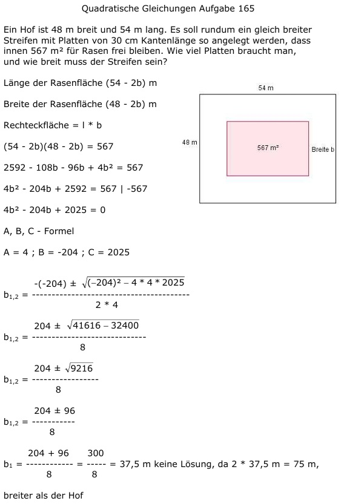
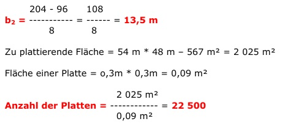

Aufgabe 165 Ein Hof ist 48 m breit und 54 m lang. Es soll rundum ein gleich breiter Streifen mit Platten von 30 cm Kantenlänge so angelegt werden, dass innen 567 m2 für Rasen frei bleiben. Wie viel Platten braucht man, und wie breit muss der Streifen sein?  Länge der Rasenfläche (54 - 2b) m Breite der Rasenfläche (48 - 2b) m Rechteckfläche = l * b (54 - 2b)(48 - 2b) = 567 2592 - 108b - 96b + 4b2 = 567 4b2 - 204b + 2592 = 567 | -567 4b2 - 204b + 2025 = 0 A, B, C - Formel A = 4 ; B = -204 ; C = 2025  204 ± 96 b1,2 = ---------- 8 204 + 96 300 b1 = ---------- = ----- = 37,5 m 8 8 keine Lösung, da 2 * 37,5 m = 75 m, breiter als der Hof 204 - 96 108 b2 = ----------- = ----- = 13,5 m 8 8 Zu plattierende Fläche = = 54 m * 48 m – 567 m² = 2 025 m² Fläche einer Platte = o,3m * 0,3m = 0,09 m² 2 025 m² Anzahl der Platten = ---------- = 22 500 0,09 m²